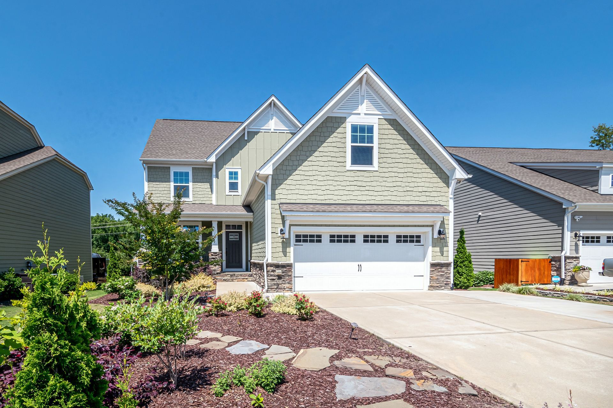

Garagentore
Sektionaltore, Rolltore, Schwing- und Seitensektionaltore – maßgefertigt von M-M Alu-Door und Frankentore, montiert von TorPro.
- Sektionaltore aus Stahl (40/60 mm gedämmt) oder Aluminium Premium+
- Alle RAL-Farben, Oberflächen Woodgrain, Silkgrain, Micrograin, Holzdekor
- Überbreiten bis 8 m, Schlupftür, Verglasung, Lüftungsgitter
- Demontage und Entsorgung des Alttors inklusive

🚪